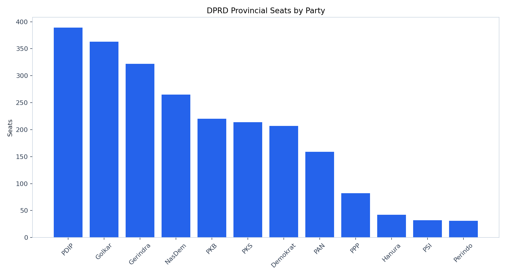
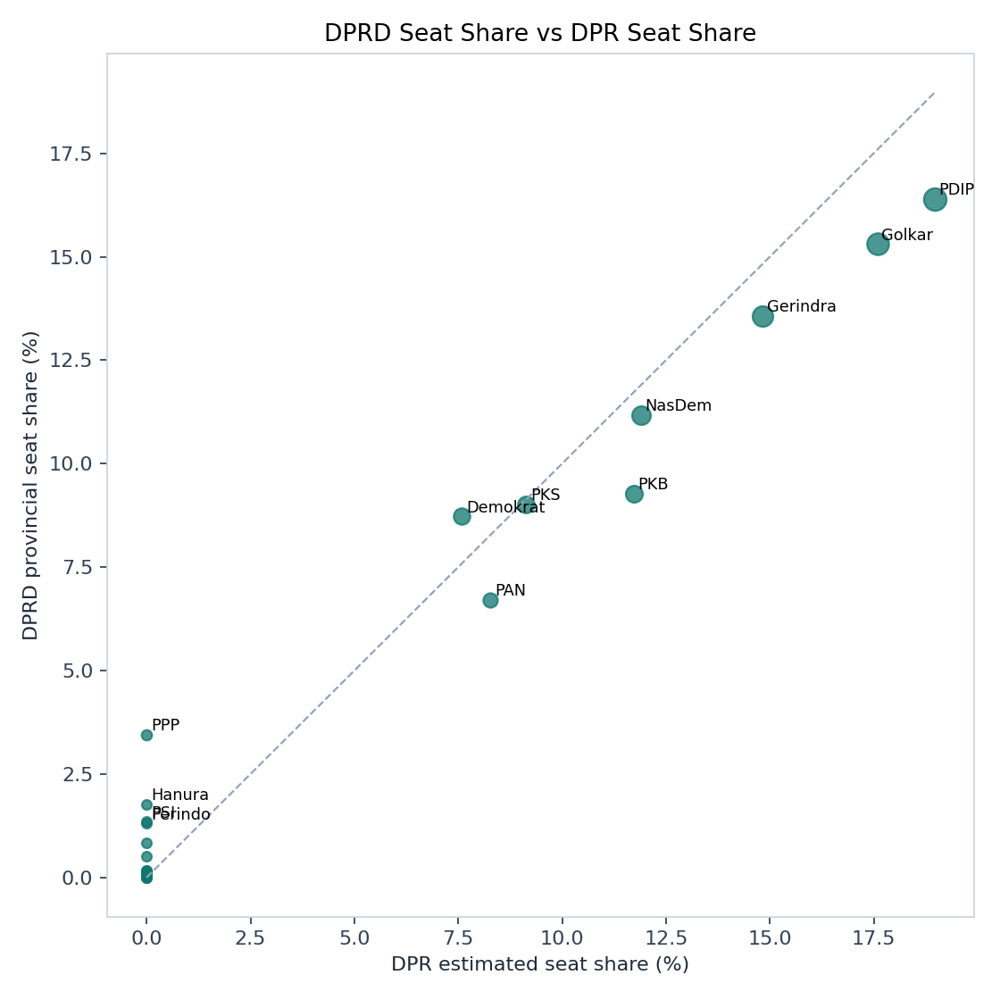
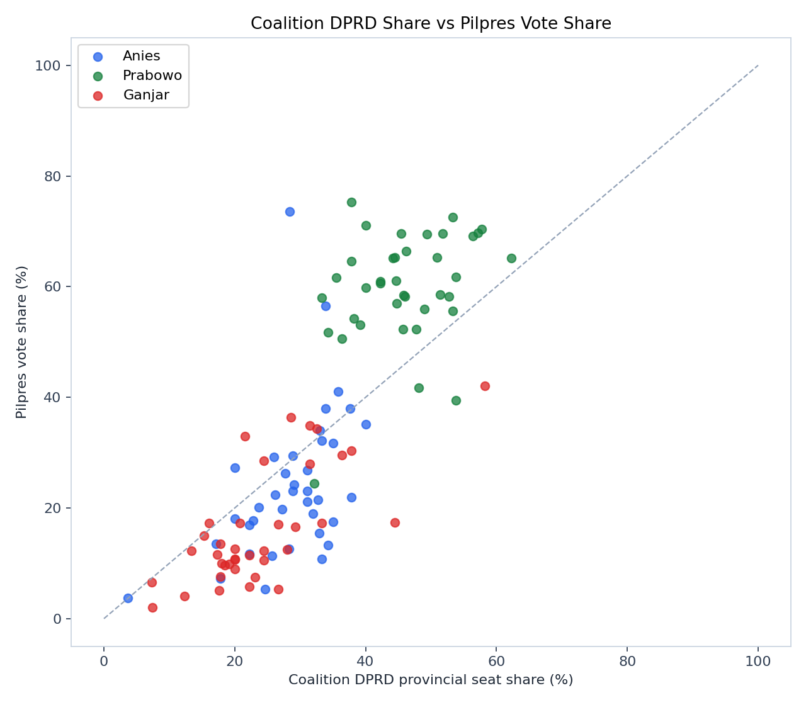
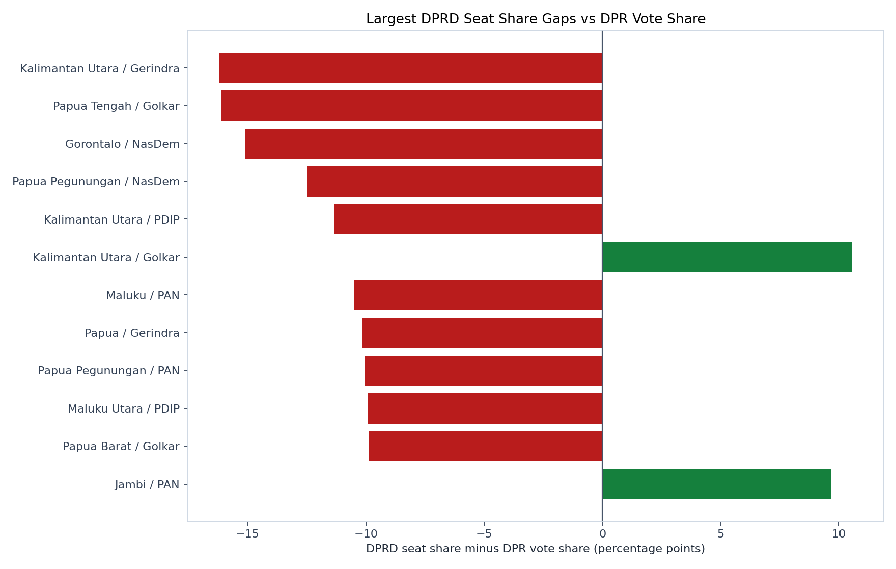

Exploratory analysis
DPRD Provincial Seats
Static visual readout comparing DPRD provincial seats with estimated DPR seats and Pilpres coalition vote share. This page is exploratory and not part of the public Render site.
DPRD Seats2,372
Provinces38
Parties With Seats20
Aceh Local Parties4
Aceh-local parties remain in DPRD totals and province leadership tables, but DPR comparison gaps exclude them because they do not contest DPR nationally.
Charts




Top Tables
Party Summary
| Party | Scope | DPRD Seats | DPRD Share | DPR Share | Gap |
|---|---|---|---|---|---|
| PDIP | national | 389 | 16.4% | 19.0% | -2.6% |
| Golkar | national | 363 | 15.3% | 17.6% | -2.3% |
| Gerindra | national | 322 | 13.6% | 14.8% | -1.3% |
| NasDem | national | 265 | 11.2% | 11.9% | -0.7% |
| PKB | national | 220 | 9.3% | 11.7% | -2.4% |
| PKS | national | 214 | 9.0% | 9.1% | -0.1% |
| Demokrat | national | 207 | 8.7% | 7.6% | +1.1% |
| PAN | national | 159 | 6.7% | 8.3% | -1.6% |
| PPP | national | 82 | 3.5% | 0.0% | +3.5% |
| Hanura | national | 42 | 1.8% | 0.0% | +1.8% |
| PSI | national | 32 | 1.3% | 0.0% | +1.3% |
| Perindo | national | 31 | 1.3% | 0.0% | +1.3% |
Province Leaders
| Province | Leader | Seats | Share | Runner Up | Margin |
|---|---|---|---|---|---|
| Bali | PDIP | 32 | 58.2% | Gerindra | 22 |
| Jawa Tengah | PDIP | 33 | 27.5% | PKB | 13 |
| Sulawesi Utara | PDIP | 19 | 42.2% | Demokrat | 13 |
| Daerah Istimewa Yogyakarta | PDIP | 19 | 34.5% | Gerindra | 11 |
| Aceh | PA | 20 | 24.7% | NasDem | 10 |
| Jawa Timur | PKB | 27 | 22.5% | Gerindra | 6 |
| Papua Pegunungan | NasDem | 11 | 24.4% | Demokrat | 6 |
| Papua Tengah | PDIP | 11 | 24.4% | NasDem | 6 |
| Kalimantan Timur | Golkar | 15 | 27.3% | Gerindra | 5 |
| Bengkulu | Golkar | 10 | 22.2% | Gerindra | 4 |
| DKI Jakarta | PKS | 18 | 17.0% | PDIP | 3 |
| Jambi | PAN | 10 | 18.2% | Golkar | 3 |
Pilpres Coalition Gaps
| Province | Candidate | DPRD Share | Pilpres | Gap |
|---|---|---|---|---|
| Aceh | Anies | 28.4% | 73.6% | +45.2% |
| Sumatera Barat | Anies | 33.8% | 56.5% | +22.7% |
| Papua | Anies | 33.3% | 10.8% | -22.5% |
| Papua Selatan | Anies | 34.3% | 13.3% | -21.0% |
| Nusa Tenggara Timur | Anies | 24.6% | 5.3% | -19.3% |
| Jawa Timur | Anies | 35.0% | 17.5% | -17.5% |
| Lampung | Anies | 32.9% | 15.5% | -17.5% |
| Papua Pegunungan | Anies | 37.8% | 21.9% | -15.9% |
| Jawa Tengah | Anies | 28.3% | 12.6% | -15.8% |
| Papua Barat | Anies | 25.7% | 11.3% | -14.4% |
| Sumatera Selatan | Anies | 32.0% | 19.0% | -13.0% |
| Sulawesi Tengah | Anies | 32.7% | 21.5% | -11.2% |
| Papua Tengah | Anies | 22.2% | 11.7% | -10.6% |
| Sulawesi Utara | Anies | 17.8% | 7.3% | -10.5% |
| Maluku | Anies | 31.1% | 21.2% | -10.0% |
DPRD vs DPR Vote Gaps
| Province | Party | DPRD Share | DPR Vote | Gap |
|---|---|---|---|---|
| Kalimantan Utara | Gerindra | 17.1% | 33.3% | -16.2% |
| Papua Tengah | Golkar | 6.7% | 22.8% | -16.1% |
| Gorontalo | NasDem | 15.6% | 30.7% | -15.1% |
| Papua Pegunungan | NasDem | 24.4% | 36.9% | -12.5% |
| Kalimantan Utara | PDIP | 8.6% | 19.9% | -11.3% |
| Kalimantan Utara | Golkar | 17.1% | 6.6% | +10.6% |
| Maluku | PAN | 6.7% | 17.2% | -10.5% |
| Papua | Gerindra | 6.7% | 16.8% | -10.2% |
| Papua Pegunungan | PAN | 4.4% | 14.5% | -10.0% |
| Maluku Utara | PDIP | 11.1% | 21.0% | -9.9% |
| Papua Barat | Golkar | 20.0% | 29.9% | -9.9% |
| Jambi | PAN | 18.2% | 8.5% | +9.7% |
| Maluku Utara | Hanura | 11.1% | 1.6% | +9.6% |
| Sulawesi Barat | Golkar | 22.2% | 12.7% | +9.5% |
| Gorontalo | PDIP | 15.6% | 6.2% | +9.3% |